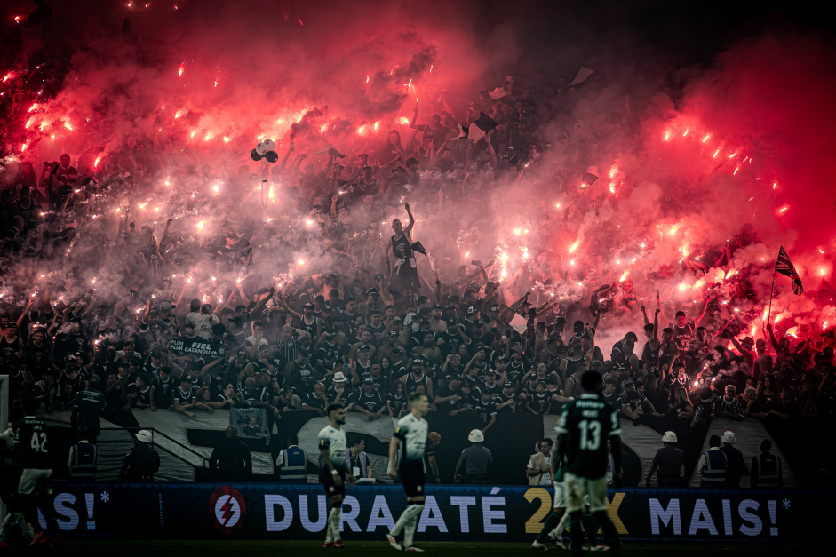

Sport Club Corinthians Paulista é uma agremiação poliesportiva sediada na cidade de São Paulo, capital do estado homônimo. É um dos clubes mais populares do Brasil e do mundo, com uma torcida apaixonada e fiel. Fundado em 1º de setembro de 1910, o Corinthians é um dos clubes mais vitoriosos do Brasil, com mais de 30 títulos importantes. O Corinthians é um clube que representa a raça, a garra e a determinação de um povo.